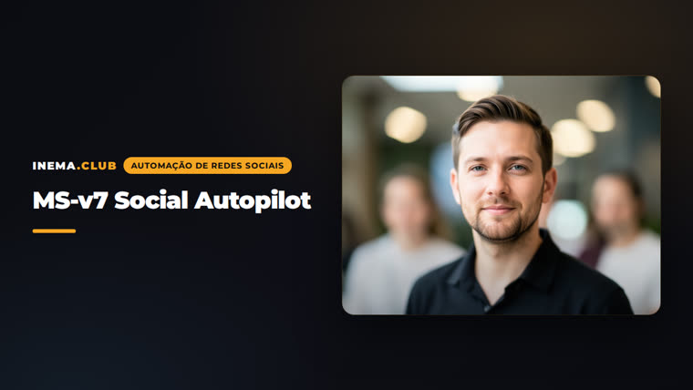

Um arquivo de voz de marca + 3 comandos. O Claude pesquisa, escreve, gera o visual e agenda. Nada vai ao ar sem o seu "sim".
Adaptação do "Social Autopilot" para a stack INEMA: tudo roda dentro do Claude Code, com provedores, marcas e redes configuráveis num único config.yaml.
Um brand-voice.md por marca: quem você é, público, ofertas, frases reais, histórias verdadeiras e regras por rede. É o que faz o post soar como você.
Publicação via Metricool (validado), Blotato ou copiar à mão. Imagem com flux2-klein ou Magnific. Troca de provedor é uma linha no config.
Toda publicação passa pelo gate sim / rascunho / não. Nada é agendado sem a sua resposta explícita na conversa.
O fluxo diário do /ms-post. O semanal (/ms-semana) faz o mesmo para 5-7 posts de uma vez, com retro por analytics antes.
Entrevista de voz (uma pergunta por vez), redes ativas e provedores. Uma vez por marca.
O post de hoje. Três perguntas, três opções, visual e agendamento.
Retro da semana passada, tabela de 5-7 posts para aprovar, fila agendada. ~15 min.
Transcrição, artigo ou URL vira um post autônomo por rede.
Só o Claude Code é obrigatório. Sem provedor de publicação, as skills entregam o texto pronto para copiar.
Plano Pro ou superior. Abra dentro da pasta do projeto: ele lê o CLAUDE.md sozinho.
# clonar e abrir git clone git@github.com:inematds/ms-v7.git ~/projetos/ms-v7 cd ~/projetos/ms-v7 && claude
Agenda Instagram, TikTok e mais. Plano Free: 20 posts/mês, sem LinkedIn/X.
claude mcp add --transport http metricool \ https://ai.metricool.com/mcp -s user # depois: /mcp → metricool → Authenticate
Provedores MCP só aceitam URL direta. O padrão é um GitHub Release; as skills sobem sozinhas.
gh release upload v1 arquivo.png \
--repo inematds/midia --clobberTodos os comandos abaixo são digitados dentro do Claude Code, na pasta do projeto. As perguntas são sempre em texto livre, uma por vez.
Cria brands/<slug>/brand-voice.md com entrevista e preenche o config.yaml. Se a marca já está descrita em algum lugar, diga onde: ele pré-preenche e só pergunta o que falta.
/ms-config # voz → redes ativas → provedor de publicação → teste de voz
Responda rede, tema e objetivo. Ele pesquisa o que está funcionando na rede, escreve 3 opções com uma história ou número do seu arquivo, e você escolhe.
/ms-post # 1. Rede? → instagram # 2. Tema? → "por que ler o system prompt" (ou "pesquise o que está em alta") # 3. Objetivo? → seguidores
O visual sai do provedor de imagem configurado. Depois ele mostra o post final com o melhor horário e espera a sua resposta.
# Visual ok? → sim # Agendo? (sim / rascunho / não) sim # agenda com publicação automática rascunho # fica no planner do provedor, não publica não # só o texto, para copiar
Retro dos últimos 7 dias via analytics, três perguntas para a semana, tabela de 5-7 posts para você editar, e a fila inteira agendada com um único "sim".
/ms-semana # retro → 3 perguntas → tabela → "Edita algo ou aprovo?" → fila → "Agendo a fila?"
Cole a transcrição, o caminho do arquivo ou a URL. Única pergunta: quais redes. Cada post sai autônomo, nunca "neste vídeo".
/ms-reaproveita https://youtube.com/watch?v=... # ou um .md, .txt, URL de artigo
As skills commitam ao final de cada post. Você só dá o push; o histórico fica em posts/.
git push # autor inematds <inematds@gmail.com>
O config.yaml decide quem faz o quê. O brand-voice.md decide como soa.
# config.yaml (trecho) marca_ativa: inema marcas: inema: redes: instagram: { conta: "@inemafuturos", ativa: true } tiktok: { conta: "@lnema.club", ativa: true } linkedin: { conta: null, ativa: false } publicacao: provedor: metricool provedores: imagem: { padrao: flux2-klein, fallback: magnific }

posts/<data>-<slug>/post.md com status, id e visual aprovado.Versão 1.0.0. O fluxo manual roda primeiro; automação por cron só depois de semanas sem falha.